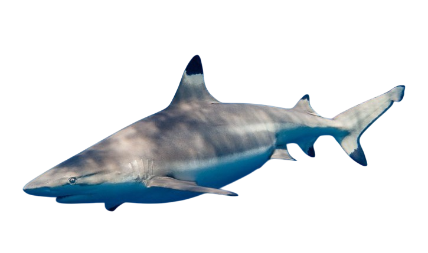
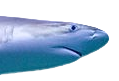

Tiburón Punta Negra

Nombre científico: |
Familia: |
Tamaño: |
Esperanza de vida: |
| índice: |
| -Descripción |
| -Reproducción |
| -Alimentación |
| -Comportamiento |
| -Distribución y Hábitat |
| -Características de su mordida |
| -Tiburón Punta Negra mini documental |
Descripción
El tiburón punta negra (Carcharhinus melanopterus) es una especie de tiburón réquiem (familia Carcharhinidae) fácilmente identificable por los contornos negros en sus aletas, sobre todo en la primera aleta dorsal y aleta caudal.Es una especie de constitución robusta con la típica figura de tiburón, posee un hocico corto, ancho, redondeado y medianamente grande, ojos ovalados. Cada fosa nasal tiene un colgajo de piel en el frente que se expande en un pezón en forma de lóbulo.
Las aletas pectorales son grandes, angostas y falcadas (en forma de hoz). La considerablemente alta primera aleta dorsal tiene el borde posterior en curva invertida como una "S". La segunda aleta dorsal es relativamente grande, con un margen posterior corto, y se coloca sobre la aleta anal. No hay cresta entre las aletas dorsales. Este tiburón es de un pálido color marrón grisáceo por encima y blanco por debajo, con una banda blanca evidente en los costados que se extiende hacia delante y por encima de la aleta anal. Todas las aletas poseen protuberancias de negro en relieve que se van aclarando hasta las puntas, son especialmente notables en la primera aleta dorsal y lóbulo inferior de la aleta caudal. La mayoría de los tiburones de arrecife de punta negra no miden más de 1,6 m (5,2 pies) de largo, aunque raramente ciertos especímenes pueden llegar a medir 1,8 m (5,9 pies) o hasta 2,0 m (6,6 pies). El peso máximo registrado es de 13,6 kg (30 lb ).
Reproducción
Los puntas negras son vivíparos, es decir, que dan a luz para existir, y paren jóvenes tiburones que nadan libremente como otros en la familia carcharhinid. Los machos alcanzan la madurez sexual entre los 4,4 y 5,9 pies (135 a 180 cm). Las hembras alcanzan la madurez a 3.9 hasta 6.3 pies (120 a 190 cm). La gestación dura de 10 a 12 meses, y dan a luz a finales de primavera y principios del verano de 1 a 10 crías. Las hembras dan a luz en las zonas de cría de estuarios costeros donde los jóvenes permanecen en los primeros años de sus vidas.
Alimentación
El tiburón de puntas negras se alimenta principalmente de pequeños peces de banco como el arenque, las sardinas, la lacha, el salmonete y las anchoas, pero también come otros peces de muchas espinas, incluyendo perros del norte, meros, jureles, róbalos, pargos, roncos, corvinas, peces planos, peces gatillo, y peces puercoespín. También se les conoce a consumir algunas especies de elasmobranquios incluyendo lijas, tiburón de nariz afilada, tiburones areneros jóvenes y rayas. También se alimentan de crustáceos y calamares ocasionalmente.
Los puntas negras, así como su pariente cercano el tiburón spinner, se conocen por saltar fuera del agua mientras se alimentan, a veces girando hasta tres o cuatro veces alrededor de su eje. Este comportamiento está pensado para facilitar el éxito depredador de los tiburones mientras se alimentan de bancos de peces cerca de la superficie. Los tiburones atacan verticalmente el banco a alta velocidad, mordiendo a los peces a medida que pasan a través de él. El impulso luego los lleva a través de la superficie del océano.
Comportamiento
Un tiburón de arrecife de puntas negras necesita seguir nadando para mantenerse vivo. El agua solo entra en sus branquias mientras se mueve, lo que les proporciona oxígeno vital, por lo que si se detienen por un largo período de tiempo se asfixiarán.Pueden detectar fácilmente el movimiento o el contraste en condiciones de poca luz mediante el uso electrorrecepciónn para localizar a su presa, aunque no pueden discernir la forma del objeto.
Distribución
Se distribuye ampliamente por las aguas costeras tropicales de toda la región del Indo-Pacífico, extendiéndose desde el mar Rojo y la costa oriental de África hasta el sur de China, el sudeste asiático, el norte de Australia y diversas islas del Pacífico central como Hawái y la Polinesia Francesa.
Hábitat
Habita principalmente en zonas costeras de muy poca profundidad —por lo general a menos de 10 metros, aunque puede llegar hasta los 75 metros—, mostrando una clara preferencia por los arrecifes de coral, lagunas y planicies arenosas.
Distribución y Hábitat
El tiburón de puntas negras habita en aguas costeras y en alta mar, pero no es una verdadera especie pelágica. Suelen dejarse ver cerca de la costa alrededor de las bocas de los ríos, bahías, pantanos de manglares, y en otros estuarios, a pesar de que no penetran profundamente en agua dulce. Se pueden encontrar en alta mar y sobre las aguas profundas cerca de bajadas de arrecifes de coral, pero se mantienen principalmente en los primeros 100 pies (30 m) de la columna de agua.
Los tiburones de puntas negras son cosmopolitas en las zonas costeras tropicales y subtropicales, en las plataformas submarinas y en aguas isleñas. En el Atlántico durante su migración estacional, van desde Nueva Escocia hasta Brasil, pero su centro de abundancia se encuentra en el Golfo de México y Mar Caribe. Habitan en todo el Mediterráneo y en la costa oeste central de áfrica. En el Pacífico, se extienden desde el sur de California hasta Perú, incluyendo el Mar de Cortés. También existen en las Islas Galápagos, Hawai, Tahití y otras islas del Pacífico Sur, hasta la costa norte de Australia. En el Océano índico, van desde Sudáfrica y Madagascar hasta el Mar Rojo, el Golfo Pérsico, a través de la costa de la India, y al este de la costa de China.
Características de su mordida
 |
Los dientes de la mandíbula superior e inferior de los tiburones de puntas negras son muy similares en forma, siendo moderadamente largos, erguidos, y estrechamente puntiagudos con una base amplia. Los dientes de la mandíbula superior están más toscamente dentados a lo largo de la cúspide y la corona que son los dientes inferiores que tienen estrías finas y tienden a curvarse hacia el interior. El recuento de los dientes es 15: 2: 15 en el maxilar superior y 15: 1: 15 en la mandíbula inferior. |